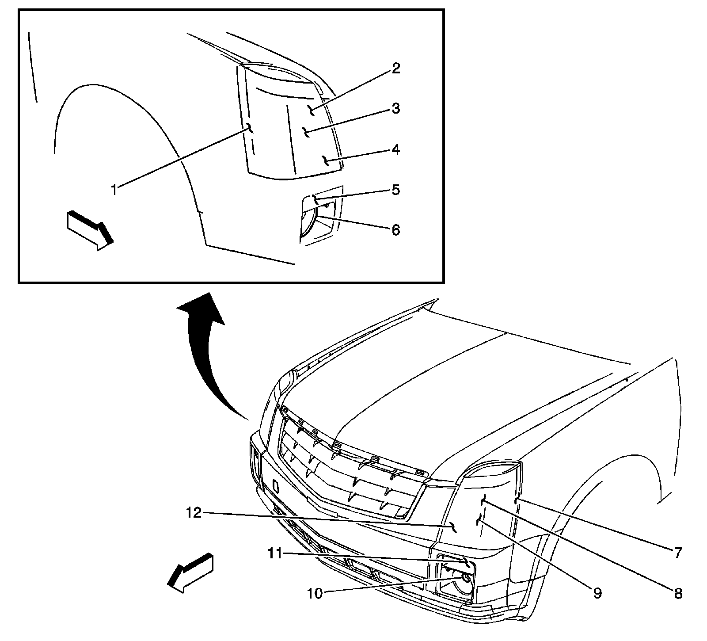
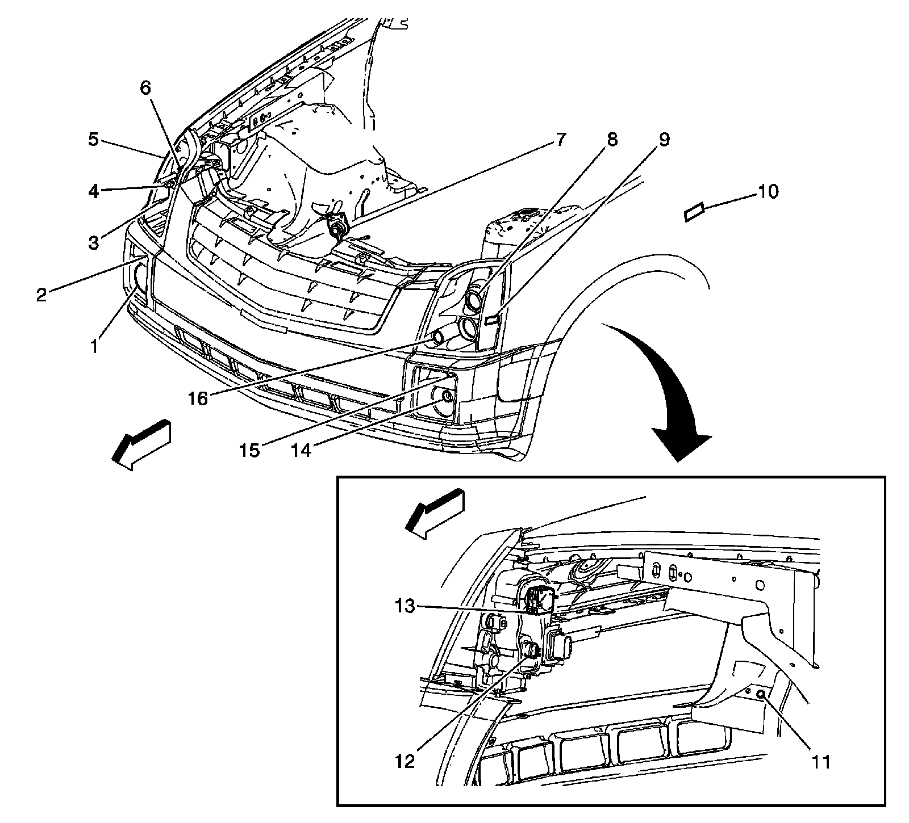
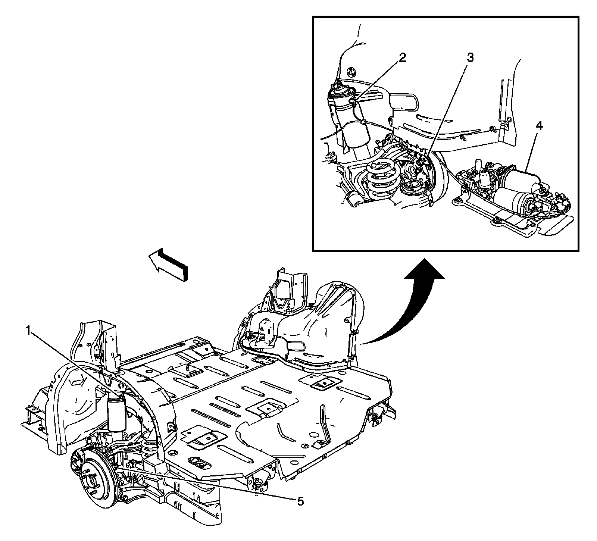
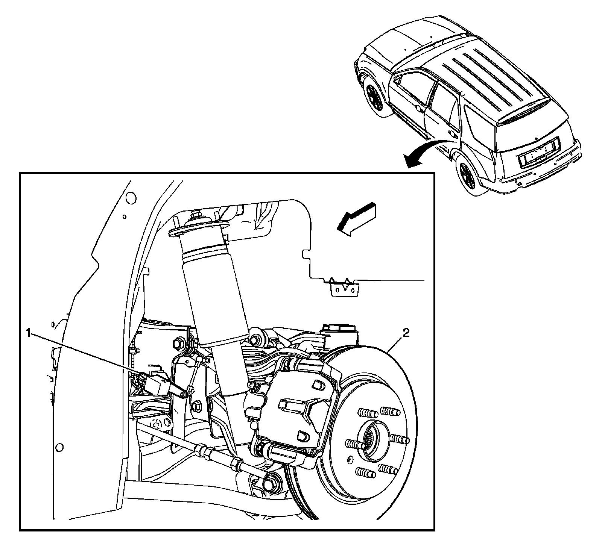

Headlamp Alignment Sensor: Locations
Front of Vehicle/Engine Compartment Component Views
Front Fascia Lighting w/o HID

1 - Marker Lamp - Right Front
2 - Headlamp Low Beam w/o HID - Right
3 - Headlamp High Beam w/o HID - Right
4 - Park Lamp - Right Front
5 - Turn Signal Lamp - Right Front
6 - Fog Lamp - Right Front
7 - Marker Lamp - Left Front
8 - Headlamp Low Beam w/o HID - Left
9 - Headlamp High Beam w/o HID - Left
10 - Fog Lamp - Left Front
11 - Turn Signal Lamp - Left Front
12 - Park Lamp - Left Front
Front Fascia Lighting - HID

1 - Fog Lamp - Right Front
2 - Turn Signal Lamp - Right Front
3 - Park Lamp - Right Front
4 - Headlamp High Beam - Right
5 - Marker Lamp - Right Front
6 - Headlamp Low Beam - Right
7 - Headlamp Leveling Sensor - Right Front (TR7)
8 - Headlamp Low Beam - Left
9 - Marker Lamp - Left Front
10 - Repeater Lamp - Left (T90)
11 - Headlamp Leveling Sensor - Left Front (TR7)
12 - Headlamp Starter/Arc Tube
13 - Headlamp Ballast
14 - Fog Lamp - Left Front
15 - Turn Signal Lamp - Left Front
16 - Park Lamp - Left Front
Wheels/Vehicle Underbody Component Views
Rear Suspension Components

1 - Suspension Damper-Left Rear
2 - Suspension Damper-Right Rear
3 - Wheel Speed Sensor (WSS) - Right Rear
4 - Automatic Level Control (ALC) Compressor (F55)
5 - Wheel Speed Sensor (WSS) - Left Rear
Left Rear Wheel Components (TR7)

1 - Headlamp Leveling Sensor - Rear (TR7)
2 - Rotor - Left Rear